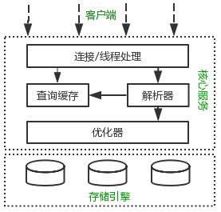

MySQL架构与基本特性
MySQL作为web开发最常用的数据库，有必要了解MySQL，如果能在头脑中构建一副MySQL各组件如何协同工作的架构图，就会有有助于我们更好地使用MySQL
MySQL逻辑架构

最上层的服务并不是MySQL所独有的，但大多数基于网络的客户端/服务器的工具或者服务都有类似的，比如链接处理，授权认证，安全
核心服务，包括查询解析，分析，优化，缓存，存储过程，触发器，视图
存储引擎，存储引擎负责MySQL中数据的存储和提取
并发控制
锁
无论何时，只要有多个查询需要在同一时刻修改数据，都会产生并发控制的问题。在解决并发读或者写的时候，可以通过实现一个有两种类型的锁组成的锁系统来解决问题，这两种类型的被称为共享锁和排他锁也叫读锁和写锁
- 读锁是共享的，或者说相互不阻塞的，多个客户在同一时刻可以同时读取同一个资源，互相不干扰
- 写锁是排他的，一个写锁会阻塞其他的写锁和读锁，这是出于安全策略的考虑，只有这样子，才能确保在给定的时间内，只有一个用户执行写入，并且防止其他用户读取正在写入的同一资源
锁粒度
一种提高共享资源并发性的方式就是让锁定对象更具有选择性，尽量之锁定需要修改的部分数据，而不是所有的资源，更理想的情况下，只会对修改的数据骗进行精确的锁定，任何时候，在给定的资源上，锁定的数据量越好啊，则系统的并发成都越高，只要相互之间不发声冲突即可
加锁也消耗资源，锁的各种操作，包括获得锁，检查锁是否已经解除，释放锁等，都会增加系统的开销
锁策略，就是在锁的开销和数据的安全性寻求平衡
- 表锁是MySQL中最基本的锁策略，并且是开销最小的策略，
- 行级锁可以最大程度地支持并发处理（同时也带来了最大的锁开销）
事务
什么是事务
事务就是一组原子性的SQL查询或者说一个独立的工作单元，事务内的语句，要么全部执行成功，要么全部执行失败
一个运行良好的事务处理系统，必须具备这么标准特征
原子性
：一个事务必须被视为一个不可分割的最小工作单元，整个事务中的所有操作要么提交成功，要么全部失败回滚一致性
：数据库总是从一个一致性的状态转换到另外一个一致性的状态隔离性
：通常来说，一个事务所做的修改在提交以前，对其他事务是不可兼得持久性
：一旦事务提交，则器所做的修改就会永久保存到数据库中
事务隔离级别
在上述，我们说过，通常情况下，一个事务所做的修改在提交以前对其他的事务是不可见的，但是隔离性其实比想像的要复杂，在SQL标准中定义了死忠隔离级别，每一种级别都规定了一个事务中所做的修改，哪些在事务内和事务见是可见的，哪些是不可见的
READ UNCOMMITED (未提交读)
在这个级别中，事务中的修改，及时没有提交，对其他事务也是可见的，事务可以读取未提交的数据，这也被称为脏读READ COMMMITED(提交读)
大多数系统默认的隔离级别都是这个级别，但是MySQL不是，一个事务开始时，只能看见已提交的事务所做的修改，也叫做不可重复读REPEATABLE READ(可重复读)
解决了脏读的问题，该级别保证了在同一个事务中多次读取同样记录的结果是一致的，但是可重复读无法解决另外一个幻读的问题，所谓幻读，指的是某个事务在读取某个范围内的记录时，另外一个事务又在该范围内插入了新的记录，当之前的事务再次读取该范围的记录时，会产生幻行
也是MySQL的默认事务隔离级别SERIALIZABLE（可串行化）
解决了幻读问题，在读取的每一行数据上都加锁，所以可能导致大量的超时和锁争用的问题
死锁
死锁指两个或者多个事务在统一资源上相互占用，并请求锁定对方的资源，从而导致恶性循环的现象，当多个事务试图以不同的顺序固定资源时，就可能产生死锁，多个事务同时锁定同一个资源时也会产生死锁。
为了解决这种问题，数据库系统实现了各种死锁检测和死锁超时机制
InnoDB目前处理死锁的方式，将持有最少行级排塔索的事务进行回滚。
MySQL中的事务
MySQL比较常见的两种事务型的存储引擎InnoDB和NDB Cluster
自动提交，MySQL默认采用自动提交模式，如果不是显式的开始一个事务，则每个查询都被当做一个事务执行提交操作
set AUTOCOMMIT=0表示需要手动提交，但是有一些命令，在执行之前会强制执行COMMIT提交当前的活动事务，比如ALTER TABLE,LOCK TABLES可以通过SET SESSION TRANSACTION ISOLATION LEVEL READ COMMITED
隐式和显式锁定
隐式锁定：
InnoDB采用的是两阶段锁定协议，就是说在事务执行过程中买随时都可以执行锁定，只有在执行COMMIT和ROLLBACK的时候才会被释放
显式锁定：
SELECT …LOCK IN SHARE MODE
SELECT … FOR UPDATE
LOCK TABLES UNlocktables 这是在服务器层实现的，与存储引擎无关一般不建议使用
多版本并发控制
MySQL的大多数事务型存储引擎实现的都不是简单的行级锁，基于提升并发性能的考虑，它们一般同时实现了多版本并发控制(MVCC)
可以认为MVCC是行级锁的一个变种。实现原理是通过保存数据在某个时间点的快照来实现，也就是说，不管需要执行多长时间，每个事务看到的数据都是一致的。
可分为乐观并发控制和悲观并发控制。
InnoDB的MVCC工作流程:
通过在每行记录后面保存两个隐藏的列来实现的，一列保存了行的创建时间，一个保存行的过期时间，存储的并不是时间值，而是系统版本号，没开始一个新的事物，系统版本都会自动递增
REPEATABLE READ隔离级别下,MVCC具体的操作
SELECT
a.InnoDB只查找版本早于当前事务版本的数据行，这样可以确保事务读取的行，要么是在事务开始前存在的，要么是事务自身插入或者修改过的
b.行的创建版本要么未定义，要么大于当前事务版本号，Insert
InnoDB为新插入的每一行保存当前系统版本号为行版本号Delete
InnoDB为新插入的每一行保存当前系统版本号为行删除标识UPDATE
InnoDB为插入的每一行保存当前系统版本号为行版本号,保存当前系统版本号为行删除标识
保存这两个额外的版本号，使大多数操作都可以不用加锁。不足之处是每行记录都需要额外的存储空间.
MVCC只在REPEATABLE READ 和 READ COMMITED 两个隔离级别下工作